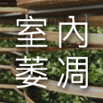
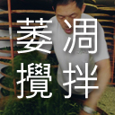
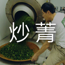
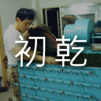
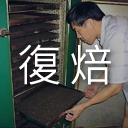

第一步 察顏
觀察茶乾的外觀!
最基本的要求必須乾燥完全、不能有太多茶角、茶梗、黃片及其它雜物。力求顏色與顆粒大小均勻，顆粒的大小沒有絕對，不一定越大越好。顏色以墨綠色帶有新鮮光澤為上等。而茶葉的條索型態（球型/半球型/條型），則隨著做法而異。
一天之中，採茶的時間以中午十二點到下午三點的早菁較佳，此時露水已失，採摘後在製茶流程的萎凋階段仍可曬到太陽。
step 1

做一道好菜，需要廚師好，更重要的是材料好；製好茶也是，有好師傅，也要有好茶菁！
step 2
「萎凋」的目的是為了幫助鮮葉的水分適度蒸發，減少細胞內水份的含量，以利空氣中的氧和葉細胞產生氧化作用，使鮮葉的青草氣消退而產生清香。
step 3
日光萎凋後，細胞膜的半透性已遭破壞，於是葉內開始產生化學變化，接著將葉片移至陰涼通風處靜置攤涼，散發葉片的熱量，並使莖梗中的水分向葉片擴散。
step 4
攪拌是用雙手執茶，微力翻攪，使鮮葉因相互摩擦而破壞葉緣細胞，讓空氣易於進入葉肉細胞內，以促進醱酵。攪拌的動作也有助於茶葉「走水」的平均。
step 5
利用160～180℃的高溫，來停止茶菁的發酵作用，在香氣初露的當下立馬下手炒菁。烏龍茶的特有香氣、滋味與水色即刻成形。
step 6
揉搓茶葉的壓力會導致葉片內汁液滲出，附著於葉片上，使得沖泡茶葉時茶液能很快溶解於熱水中，成為一杯滋味香醇的茶湯。
step 7
將揉捻完成的茶葉解塊翻動後，進入茶菁的初乾程序，使整體水份降低至30~35%，摸起來柔軟有彈性、不粘手為止。這是茶葉第一次的乾燥，茶菁的風味概已定型。
step 8
半球型茶於揉捻後增加團揉，以布巾包裹茶葉成球團狀，再以手工或機器來回搓壓；過程中須不時將布巾攤開，打散茶葉散熱；重複次數越多茶葉越結實。
step 9
焙茶即用溫火烘茶。焙茶是為了再次清除茶葉中的水分，以便更好地保藏貯存。並且火候將決定茶葉的風味與口感，是製茶的最後一道程序。
step 10
觀察茶乾的外觀!
最基本的要求必須乾燥完全、不能有太多茶角、茶梗、黃片及其它雜物。力求顏色與顆粒大小均勻，顆粒的大小沒有絕對，不一定越大越好。顏色以墨綠色帶有新鮮光澤為上等。而茶葉的條索型態（球型/半球型/條型），則隨著做法而異。
辨識茶湯的顏色，是選好茶的重要步驟！
不論是哪種烘焙程度的茶葉，茶湯都是以清澈透明、帶光澤，杯面泛有油光，久放後顏色不會有太大變化為上品。 製程好的茶葉浸泡的越久只會影響到茶湯的濃度，而不會變得苦澀或使茶湯顏色變紅。久浸之後水色會變深偏紅，是因為茶葉在製程中不完善，而導致茶葉一經熱水沖泡後還在產生化學變化所致。
茶葉鑒賞中，評定葉底(茶渣)是不可少的步驟。評定葉底一是靠嗅覺辨別香氣是否依然清香、自然，二是要動手摸摸看，好的茶渣應該要摸起來有彈性，經過多次沖泡、浸泡依然精神飽滿，老嫩程度和葉片大小必須均勻整齊、色澤度新鮮，葉片需完整釋放開來（沖泡開後葉片依然捲曲，代表在製作的過程中「走水」不順利）。
浸泡後的茶葉葉底，能真實反映茶菁的「本來面目」，通過分析葉底狀況，不但能判斷出茶菁(鮮葉)的生長發育情況如：是否生長旺盛、是否有病蟲危害、採摘特點等，更能判斷製茶技術的優劣。
三個口成一個「品」！稱作品茶，自然得分為三口。
記得，接過茶後別豪氣的舉杯一飲而盡，必須先淺淺的抿一口，讓空氣與茶湯在口腔中混和，再緩緩咽下，讓茶水通過舌頭，擴展到舌苔，直接刺激味蕾，讓茶香慢慢的傳遞整個口腔鼻腔。通過第一口的淺嘗，口腔中已經充滿了茶香。此時，你可以深吸一下茶香，再輕輕送上一口，這是為了能更深切的感受茶葉的味道！
就像孩子試著學會用語言表達般，多練習描述您品嚐的茶葉味道，有助於您在喝下每口茶湯時，能快速的從記憶資料庫中應對該氣味合適的位子，能更快速的篩選適合您的氣味。
善茶